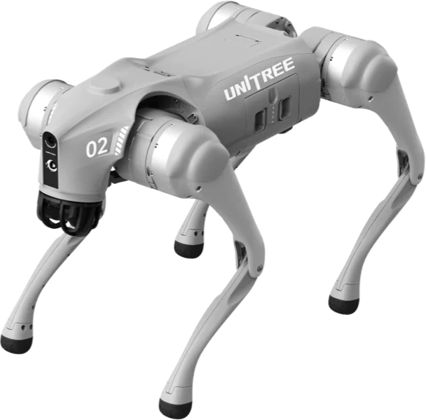

Quadrupede Go2 EDU con LiDAR · {{CLIENTE}}{{PROGETTO}}

700 mm
Segnaposto: immagine ufficiale Unitree. Nel post finale va la foto della consegna{{NOTA}}
MappaSLAM e localizzazione impostati nel Laboratorio Abra
Digital twinStabilimento rilevato con il LiDAR
SimulatoreMuJoCo, per provare il codice prima del robot
Documentazione{{MANUALE}} e repository condiviso